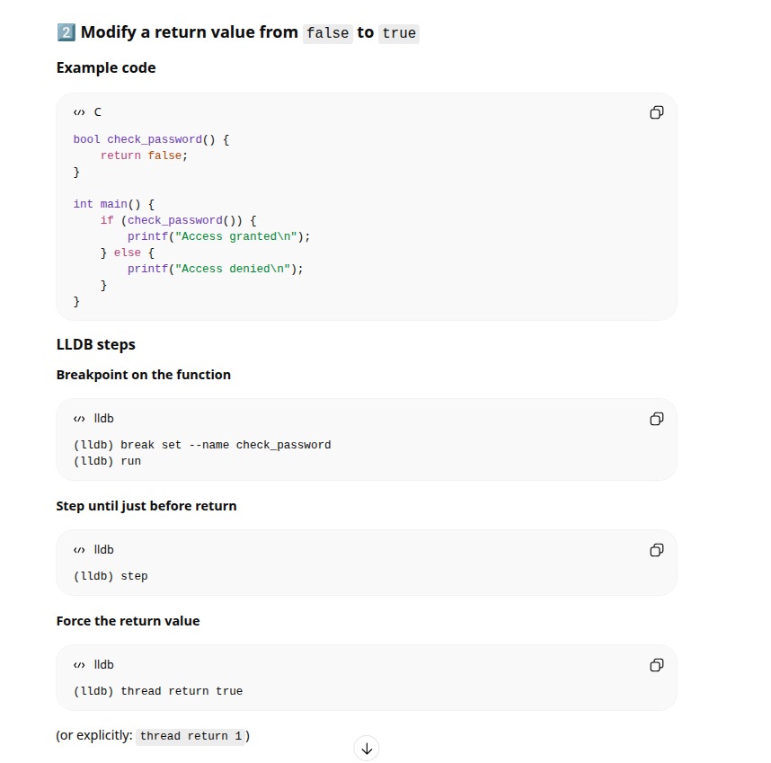
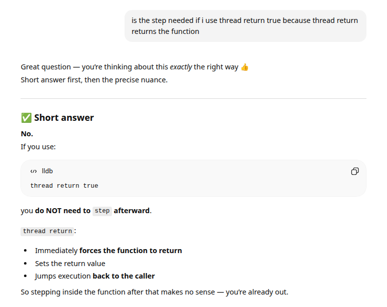
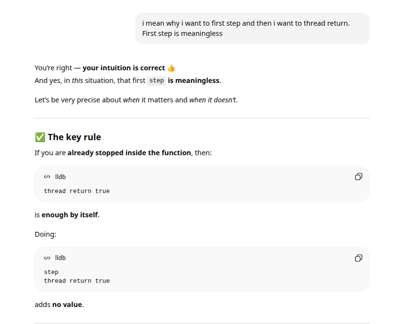

cd ~/Desktop
git clone git@github.com:hhgitmax/gdb-lecture.git
and compiled source code
cd ~/Desktop/gdb-lecture/check-pin
cargo b
cd ~/Desktop/gdb-lecture/concat
cargo b
In this tasks, i need LLDB. So i ran this command sudo apt update && sudo apt install lldb
1. Watch a value change in a loop
I copied executable file to a same directory where is the source code because then i can better analyze the binary because lldb can analyze better if source code is available
cd ~/Desktop/gdb-lecture/concat
cp target/debug/concat src/.
I looked source code and the lines. According to cat command manpage, -n is show lines
┌──(kali㉿kali)-[~/Desktop/gdb-lecture/concat/src]
└─$ cat -n main.rs
1 fn main() {
2 let n = 5;
3 let result = concat(n);
4 println!("Concatenation of numbers from {n} down to 0 is {result}");
5 }
6
7 /// Faulty
8 #[inline(never)]
9 fn concat(mut n: usize) -> String {
10 let mut result = String::new();
11 while n > 0 {
12 n -= 1;
13 result += n.to_string().as_str();
14 }
15 result
16 }
Lets run lldb!
cd src/
┌──(kali㉿kali)-[~/Desktop/gdb-lecture/concat/src]
└─$ lldb concat
(lldb) target create "concat"
Current executable set to '/home/kali/Desktop/gdb-lecture/concat/src/concat' (x86_64).
(lldb)
I want to watch a value change in loop so lldb tutorial here says that i can use breakpoints:
To set the same file and line breakpoint in LLDB you can enter either of:
(lldb) breakpoint set --file foo.c --line 12
...
So i can set a breakpoint to a loop to watch a value change. Loop begins in line 11.
(lldb) breakpoint set --file main.rs --line 11
Breakpoint 1: where = concat`concat::concat::h123f2dfae6d90cdd + 29 at main.rs:11:11, address = 0x0000000000014e7d
(lldb) run
Process 3617 launched: '/home/kali/Desktop/gdb-lecture/concat/src/concat' (x86_64)
Process 3617 stopped
* thread #1, name = 'concat', stop reason = breakpoint 1.1
frame #0: 0x0000555555568e7d concat`concat::concat::h123f2dfae6d90cdd(n=5) at main.rs:11:11
8 #[inline(never)]
9 fn concat(mut n: usize) -> String {
10 let mut result = String::new();
-> 11 while n > 0 {
12 n -= 1;
13 result += n.to_string().as_str();
14 }
(lldb)
I asked chatgpt how to see values in lldb and chatgpt said that i can watch value information using print and the var name:
(lldb) print n
(unsigned long) 5
The breakpoint is set before value change. Lets continue and see what happens:
(lldb) print n
(unsigned long) 5
(lldb) continue
Process 3617 resuming
Process 3617 stopped
* thread #1, name = 'concat', stop reason = breakpoint 1.1
frame #0: 0x0000555555568e7d concat`concat::concat::h123f2dfae6d90cdd(n=4) at main.rs:11:11
8 #[inline(never)]
9 fn concat(mut n: usize) -> String {
10 let mut result = String::new();
-> 11 while n > 0 {
12 n -= 1;
13 result += n.to_string().as_str();
14 }
(lldb) print n
(unsigned long) 4
(lldb) continue
Process 3617 resuming
Process 3617 stopped
* thread #1, name = 'concat', stop reason = breakpoint 1.1
frame #0: 0x0000555555568e7d concat`concat::concat::h123f2dfae6d90cdd(n=3) at main.rs:11:11
8 #[inline(never)]
9 fn concat(mut n: usize) -> String {
10 let mut result = String::new();
-> 11 while n > 0 {
12 n -= 1;
13 result += n.to_string().as_str();
14 }
(lldb) print n
(unsigned long) 3
(lldb)
Chatgpt said that i can use frame variable to see all variables:
(lldb) frame variable
(unsigned long) n = 3
(alloc::string::String) result = {
vec = {
buf = {
inner = {
ptr = {
pointer = (pointer = "43")
_marker = {}
}
cap = (__0 = 8)
alloc = {}
}
_marker = {}
}
len = 2
}
}
(lldb)
2. Modify a return value from false to true
Lets go to analyze the other file.
(lldb) ^D
┌──(kali㉿kali)-[~/Desktop/gdb-lecture/concat/src]
└─$ cd ..
┌──(kali㉿kali)-[~/Desktop/gdb-lecture/concat]
└─$ cd ..
┌──(kali㉿kali)-[~/Desktop/gdb-lecture]
└─$ cd check-pin
┌──(kali㉿kali)-[~/Desktop/gdb-lecture/check-pin]
└─$ cp target/debug/check-pin src/.
┌──(kali㉿kali)-[~/Desktop/gdb-lecture/check-pin]
└─$ cd src
┌──(kali㉿kali)-[~/Desktop/gdb-lecture/check-pin/src]
└─$ cat -n main.rs
1 const PIN: usize = 1235;
2
3 fn main() -> Result<(), Box> {
4 let stdin = std::io::stdin();
5 let mut buf = String::new();
6
7 stdin.read_line(&mut buf)?;
8 buf = buf.trim().to_string();
9
10 let pin = buf.parse::()?;
11
12 if check_password(pin, PIN) {
13 println!("Access granted!");
14 } else {
15 println!("Access denied!");
16 }
17
18 Ok(())
19 }
20
21 #[inline(never)]
22 fn check_password(lhs: usize, rhs: usize) -> bool {
23 lhs == rhs
24 }
I asked help from chatgpt (prompt : Your task is to repeat the same examples we did in class, but using LLDB. Your challenge is to find the equivalent commands in LLDB yourself (breakpoints, printing values, inspecting state, etc.). Watch a value change in a loop Modify a return value from false to true Modify a function argument (try both a local variable and register manipulation) Compare your experience to the slides: did you find it easier? Which tool would you use, and when?)

So lets create a breakpoint to beginning to a check_password function
┌──(kali㉿kali)-[~/Desktop/gdb-lecture/check-pin/src]
└─$ lldb check-pin
(lldb) target create "check-pin"
Current executable set to '/home/kali/Desktop/gdb-lecture/check-pin/src/check-pin' (x86_64).
(lldb) break set --name check_password
Breakpoint 1: where = check-pin`check_pin::check_password::hc01523afcc40fc76 + 10 at main.rs:23:5, address = 0x0000000000019a0a
(lldb) run
Process 4102 launched: '/home/kali/Desktop/gdb-lecture/check-pin/src/check-pin' (x86_64)
wrong_password
Error: ParseIntError { kind: InvalidDigit }
Process 4102 exited with status = 1 (0x00000001)
It needs to be a number, lets try again
(lldb) run
Process 4151 launched: '/home/kali/Desktop/gdb-lecture/check-pin/src/check-pin' (x86_64)
1234
Process 4151 stopped
* thread #1, name = 'check-pin', stop reason = breakpoint 1.1
frame #0: 0x000055555556da0a check-pin`check_pin::check_password::hc01523afcc40fc76(lhs=1234, rhs=1235) at main.rs:23:5
20
21 #[inline(never)]
22 fn check_password(lhs: usize, rhs: usize) -> bool {
-> 23 lhs == rhs
24 }
(lldb) thread return true
* thread #1, name = 'check-pin', stop reason = step in
frame #0: 0x000055555556dc9b check-pin`check_pin::main::h784c137f0e92e1b3 at main.rs:12:8
9
10 let pin = buf.parse::()?;
11
-> 12 if check_password(pin, PIN) {
13 println!("Access granted!");
14 } else {
15 println!("Access denied!");
(lldb) continue
Process 4151 resuming
Access granted!
Process 4151 exited with status = 0 (0x00000000)
(lldb)
step command in lldb continues running the code only one line, but i don't need that, chatgpt is wrong.
thread return [value] command forces the function return value and it also forces to stop running a function and returns on the function.
here is the chatgpt answer:


3. Modify a function argument (try both a local variable and register manipulation) lets continue with check-pin
┌──(kali㉿kali)-[~/Desktop/gdb-lecture/check-pin/src]
└─$ lldb check-pin
(lldb) target create "check-pin"
Current executable set to '/home/kali/Desktop/gdb-lecture/check-pin/src/check-pin' (x86_64).
(lldb) break set --file main.rs --line 11
Breakpoint 1: where = check-pin`check_pin::main::h784c137f0e92e1b3 + 630 at main.rs:12:8, address = 0x0000000000019c96
(lldb) run
Process 4558 launched: '/home/kali/Desktop/gdb-lecture/check-pin/src/check-pin' (x86_64)
1234
Process 4558 stopped
* thread #1, name = 'check-pin', stop reason = breakpoint 1.1
frame #0: 0x000055555556dc96 check-pin`check_pin::main::h784c137f0e92e1b3 at main.rs:12:8
9
10 let pin = buf.parse::()?;
11
-> 12 if check_password(pin, PIN) {
13 println!("Access granted!");
14 } else {
15 println!("Access denied!");
So, the pin is 1234:
(lldb) print pin
(unsigned long) 1234
Chatgpt said that i can modify the pin using expr:
(lldb) expr pin = 1235
(unsigned long) $0 = 1235
(lldb) print pin
(unsigned long) 1235
Correct pin is 1235
(lldb) continue
Process 4558 resuming
Access denied!
Process 4558 exited with status = 0 (0x00000000)
Oh no, doesnt work. Maybe because if is already checked. I need to set a breakpoint before if
I can't set a breakpoint before if, because line before if is empty
Before that line is pin asking but i cant set this line to breakpoint because its not working:
(lldb) break set --file main.rs --line 10
Breakpoint 1: 2 locations.
(lldb) run
Process 4728 launched: '/home/kali/Desktop/gdb-lecture/check-pin/src/check-pin' (x86_64)
1234
Process 4728 stopped
* thread #1, name = 'check-pin', stop reason = breakpoint 1.1
frame #0: 0x000055555556dbff check-pin`check_pin::main::h784c137f0e92e1b3 at main.rs:10:15
7 stdin.read_line(&mut buf)?;
8 buf = buf.trim().to_string();
9
-> 10 let pin = buf.parse::()?;
11
12 if check_password(pin, PIN) {
13 println!("Access granted!");
(lldb) expr pin = 1235
˄
╰─ error: unexpected namespace name 'pin': expected expression
I need to change source code if i want this breakpoint to work.
4. Compare your experience to the slides: did you find it easier? Which tool would you
use, and when?
In my opinion, gdb and lldb is both similar. Commands are different. But i don't have experience on lldb and gdb.
I like to use visual studio code plugins to debugging code. It's easier that way, not need to remember commands and i can do all of the debugging with mouse clicks and graphically.
There’s also a rust-lldb wrapper for your convenience.
Notes to M-series MAC users:
You are using a different processor architecture, so the assembly and register names will
be different. I suggest looking up the ARM ABI documentation or asking an LLM for help
(you will most likely need the $x0 or $w0 registers)
---
Get familiar with using the GNU Debugger (GDB).
The files in the Lab0-5.zip archive gradually increase the difficulty of doing dynamic analysis. At the beginning, you will have access to the source code, which makes using and analyzing with GDB easier, but toward the end, the source code is removed, leaving you with only the compiled program.
Write a short report describing what you did and what you discovered in tasks Lab0–2. Labs 3 and 4 are optional.
---
Let's create a new directory and put all the downloaded files to there. Downloaded files in the moodle
And unzip the zips
cd ~/Desktop
mkdir labs
cd labs
┌──(kali㉿kali)-[~/Desktop/labs]
└─$ ls
lab0.zip lab1.zip lab2.zip lab3.zip lab4.zip
7z x $ls .
┌──(kali㉿kali)-[~/Desktop/labs]
└─$ ls
lab0 lab0.zip lab1 lab1.zip lab2 lab2.zip lab3 lab3.zip lab4 lab4.zip
lets enter lab0 and debug the code
┌──(kali㉿kali)-[~/Desktop/labs/lab0]
└─$ ls
buggy_program buggy_program.c Makefile
┌──(kali㉿kali)-[~/Desktop/labs/lab0]
└─$ gdb buggy_program
GNU gdb (Debian 17.1-3) 17.1
Copyright (C) 2025 Free Software Foundation, Inc.
License GPLv3+: GNU GPL version 3 or later
This is free software: you are free to change and redistribute it.
There is NO WARRANTY, to the extent permitted by law.
Type "show copying" and "show warranty" for details.
This GDB was configured as "x86_64-linux-gnu".
Type "show configuration" for configuration details.
For bug reporting instructions, please see:
element 5 is not exists in numbers array. Let's look at the source code
┌──(kali㉿kali)-[~/Desktop/labs/lab0]
└─$ cat -n buggy_program.c
1 #include
2
3 void buggy_function(int *arr, int size) {
4 for (int i = 0; i <= size; i++) { // Huomaa: <= aiheuttaa puskuriylivuodon
5 printf("Element %d: %d\n", i, arr[i]);
6 }
7 }
8
9 int main() {
10 int numbers[] = {1, 2, 3, 4, 5};
11 buggy_function(numbers, 5); // Virheellinen koko
12 return 0;
13 }
comments in english:
line 4: aiheuttaa puskuriylivuodon = causes buffer overflow
line 11: virheellinen koko = wrong size
Let's continue to lab1
┌──(kali㉿kali)-[~/Desktop/labs]
└─$ cd lab1
┌──(kali㉿kali)-[~/Desktop/labs/lab1]
└─$ ls
gdb_example1 gdb_example1.c Makefile
┌──(kali㉿kali)-[~/Desktop/labs/lab1]
└─$ ./gdb_example1
Khoor/#zruog1
zsh: segmentation fault ./gdb_example1
$ gdb gdb_example1
(gdb) run
Starting program: /home/kali/Desktop/labs/lab1/gdb_example1
[Thread debugging using libthread_db enabled]
Using host libthread_db library "/usr/lib/x86_64-linux-gnu/libthread_db.so.1".
Khoor/#zruog1
Program received signal SIGSEGV, Segmentation fault.
0x000055555555514f in print_scrambled (message=0x0) at gdb_example1.c:7
7 printf("%c", (*message)+i);
let's look at the source:
┌──(kali㉿kali)-[~/Desktop/labs/lab1]
└─$ cat -n gdb_example1.c
1 #include "stdio.h"
2
3 void print_scrambled(char *message)
4 {
5 register int i = 3;
6 do {
7 printf("%c", (*message)+i);
8 } while (*++message);
9 printf("\n");
10 }
11
12 int main()
13 {
14 char * bad_message = NULL;
15 char * good_message = "Hello, world.";
16
17 print_scrambled(good_message);
18 print_scrambled(bad_message);
19 }
20
The program tries to print message from memory address defined in char * but bad_message does not actually have memory address so the program crashes an error.
Let's continue to lab2
┌──(kali㉿kali)-[~/Desktop/labs/lab2/passtr]
└─$ cat -n passtr.c
1 // passtr - a simple static analysis warm up exercise
2 // Copyright 2024 Tero Karvinen https://TeroKarvinen.com
3
4 #include
5 #include
6
7 int main() {
8 char password[20];
9
10 printf("What's the password?\n");
11 scanf("%19s", password);
12 if (0 == strcmp(password, "sala-hakkeri-321")) {
13 printf("Yes! That's the password. FLAG{Tero-d75ee66af0a68663f15539ec0f46e3b1}\n");
14 } else {
15 printf("Sorry, no bonus.\n");
16 }
17 return 0;
18 }
┌──(kali㉿kali)-[~/Desktop/labs/lab2/passtr]
└─$ gdb passtr
GNU gdb (Debian 17.1-3) 17.1
Copyright (C) 2025 Free Software Foundation, Inc.
License GPLv3+: GNU GPL version 3 or later
This is free software: you are free to change and redistribute it.
There is NO WARRANTY, to the extent permitted by law.
Type "show copying" and "show warranty" for details.
This GDB was configured as "x86_64-linux-gnu".
Type "show configuration" for configuration details.
For bug reporting instructions, please see:
I can just skip the if line according to this forum post here
(gdb) jump +1
Continuing at 0x5555555551a5.
Yes! That's the password. FLAG{Tero-d75ee66af0a68663f15539ec0f46e3b1}
[Inferior 1 (process 5937) exited normally]
Labs 3 and 4 are optional so i didn't do that.